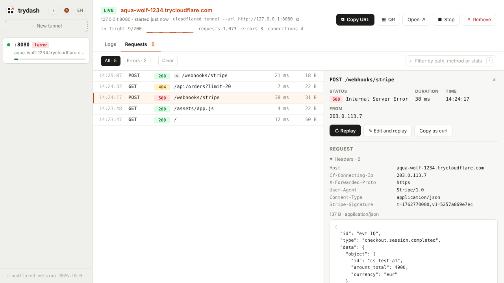

Request inspector
Every request through the tunnel, with headers and body. Replay it, edit it first, or copy it as curl: made for webhooks.
Free software · GPL-3.0
Expose a dev service or a folder in one click, see every request that comes in, and follow all your tunnels and their logs in one place.
A single executable for Linux, macOS and Windows: nothing to install besides cloudflared.
Executables for 5 systems, verifiable with SHA256SUMS.
Animation: trydash 2.0 is started with “./trydash 3000” and opens the browser by itself; the tunnel gets a public URL, which is copied and shown as a QR code; webhook requests come in, a failed one is opened and replayed; logs and traffic follow; last, a folder is published by typing its path.
cloudflared tunnel --url http://localhost:3000 is great, but with two or three services running you end up
with several terminals to watch, URLs to copy around and logs that are hard to read.
trydash starts and manages quick tunnels for you.
Every request through the tunnel, with headers and body. Replay it, edit it first, or copy it as curl: made for webhooks.
Type ~/site/dist instead of a port: trydash serves the folder itself, no local server needed. Hidden files stay out.
trydash 3000 opens the tunnel and the dashboard in your browser, ready for a package.json script.
A tunnel can stop by itself after 30 minutes or a day. Your tunnels come back, stopped, the next time you start trydash.
Scan the URL with your phone. Get a browser notification when a tunnel is ready or your server stops answering.
An access token at every start, no framing by other sites, tunnels that really stop. The interface speaks English and Italian.
Each with its status, URL and error count. To create one, just type the port: 3000 becomes http://127.0.0.1:3000.
Colored levels, filters, highlighted search, infinite scrolling and a “follow the tail” mode.
Limit a tunnel to specific addresses or whole domains (*@company.com). A list pasted from Outlook works too.
Requests in flight against the 200 limit, totals, errors, connections and a chart of the last 5 minutes.
Host header, unverified TLS for self-signed certificates, HTTP/2 origin. A preview shows the equivalent cloudflared command.
It tells you when your origin isn’t responding, when you get close to the request limit and when a restart will change the URL.

Plus: the development servers running on your computer suggested in the form, a Hello World test without a local server, stopped tunnels you can still read, light and dark themes, a mobile layout and keyboard shortcuts. The interface follows your browser, in English or Italian.
cloudflaredIt must be on your PATH. Follow Cloudflare’s guide; if it’s missing, trydash shows you the commands for your system.
| System | File |
|---|---|
| Linux x64 | trydash-2.0.0-linux-x64 |
| Linux ARM64 | trydash-2.0.0-linux-arm64 |
| macOS Apple Silicon | trydash-2.0.0-darwin-arm64 |
| macOS Intel | trydash-2.0.0-darwin-x64 |
| Windows x64 | trydash-2.0.0-windows-x64.exe |
Check the file with SHA256SUMS: sha256sum -c SHA256SUMS --ignore-missing
chmod +x trydash-*-linux-x64 # Linux and macOS
./trydash-*-linux-x64 # or: ./trydash-*-linux-x64 3000The dashboard opens in your browser, with its access token. Type your service’s port, or a folder, and press Create; with 3000 after the command, the tunnel starts right away. Without a browser, open the address it prints, like http://127.0.0.1:8787/?token=…. On Windows, just run the .exe file.
The binaries aren’t signed. On macOS, lift the Gatekeeper block with xattr -d com.apple.quarantine trydash-*; on Windows, if SmartScreen shows up, choose “More info” and then “Run anyway”.
Prefer to run from source? You need Bun ≥ 1.1: git clone https://github.com/mikzero/trydash.git && cd trydash && bun start.
*.trycloudflare.com URL is random and changes on every start;429;127.0.0.1 and answers only with the token it prints at start-up;